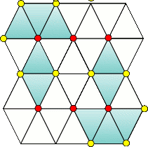

Chapter 5 医神の黄昏It Never Ends
- 2テロ発生！/Under the Knife
-
Information
- バイタル 99/99
- タイムリミット 10分
Process
- 5人のキリアキ患者を助ける
Guide
キリアキの基本的な攻略はギルス攻略：キリアキを参照。
通称5人切り。10分以内にキリアキ患者5人を救わねばならない。
一人目
キリアキ1匹⇒キリアキ2匹⇒マザー
二人目
キリアキ2匹⇒キリアキ3匹⇒マザー
三人目
キリアキ2匹⇒キリアキ2匹⇒マザー+キリアキ1匹
四人目
キリアキ2匹⇒キリアキ2匹⇒マザー+キリアキ1匹
五人目
キリアキ3匹⇒キリアキ2匹⇒マザー+キリアキ1匹
どうしても間に合わない場合
2人以上助けた後にタイムがゼロになると応援が駆けつけ、現在手術中の患者で終了となる。この時、時間制限が無くなるので油断せずに最後まで慎重にいこう。
Special Bonus
条件 スコア MAX CHAIN 【80/120/200】以上 800 残時間有りで5人の手術終了 600 【3/4/5】人以上の患者を救う 100 Miss判定無し 500 Operation Rank
ランク スコア C ～20999 B 21000～24999 A 25000～29999 S 30000～31999 XS 32000～ for XS
時間制限が無い分、CHAIN200以上、ほぼフルチェインが必要になるので、慌てず騒がず落ち着いて確実に処理していくこと。特に出血創やマザーの大裂傷はBadが出やすいので注意する。
Movie
- 3進化するギルス/Shifting GUILT
-
Information
- バイタル 99/99
- タイムリミット 5分
Process
- テタルティの除去
Guide
テタルティの基本的な攻略はギルス攻略：テタルティを参照。
以前と同じく少しずつ確実に殲滅していけばよい。

赤い楔を全て抜けば、どの位置の膜を剥がしても増殖しない。
Special Bonus
条件 スコア 超執刀を使用しない 1000 膜を【10/6/3】枚以上増殖させない 500 【120/180/190】秒以上残して手術終了 300 Miss判定無し 200 Operation Rank
ランク スコア C ～5299 B 5300～5699 A 5700～5999 S 6000～6299 XS 6300～ for XS
以前同様、法則を理解していれば問題無い。
Movie
- 4続・進化するギルス/GUILT Evolves
-
Information
- バイタル 90/99
- タイムリミット 5分
Process
- トリーティの処置
Guide
トリーティの基本的な攻略はギルス攻略：トリーティを参照。
耐久力が前より上がった程度でほとんど変わらない。ミス打ちにさえ気を付ければ問題無いだろう。
Special Bonus
条件 スコア MAX CHAIN 【10/25/30】以上 600 毒憩室の発生個数が【9/6/3】個以下 500 【90/150/180】秒以上残して手術終了 400 Miss判定無し 500 Operation Rank
ランク スコア C ～7799 B 7800～8099 A 8100～8499 S 8500～8699 XS 8700～ for XS
投与のコツさえ掴んでいれば以前同様問題無い。
Movie
- 6カドゥケウス感染/Infection
-
Information
- バイタル 95/99
- タイムリミット 5分
Process
- パラスケヴィの処置
Guide
パラスケヴィの基本的な攻略はギルス攻略：パラスケヴィを参照。
このエピソードでは腸→胃→膵臓→心臓と患部を移動する。心臓で潜られると強制的に手術失敗になるので、気をつけること。
Special Bonus
条件 スコア MAX CHAIN 【30/40/50】以上 1000 パラスケヴィの患部移動回数【2/1/1】回以下 500 【60/90/120】秒以上残して手術終了 300 Miss判定無し 200 Operation Rank
ランク スコア C ～8999 B 9000～9399 A 9400～9699 S 9700～9999 XS 10000～ for XS
患部移動回数が条件に入っているので、尻尾の動きをよく見て小まめにレーザーで動きを止めよう。あとは重なった時は無理して摘出しようとせずにやりすごすこと。
Movie
- 8小さな悪魔/A Devil
-
Infomation
- 制限時間 5分
- バイタル 70/90
Information
- バイタル 90/99
- タイムリミット 5分
Process
- 全ての裂傷を縫合
- 次々と裂傷と共にギルスが出現するのでレーザーで焼却
- 8回出現で終了
Guide
裂傷を縫合していくと、裂傷と共に虫が一緒に沸いてくる。この虫を放置すると青い虫を生み出し、バイタルの最大値が下がってしまうので、レーザーで素早く処理する。
虫は裂傷の中心から出てくるので、予めレーザーを準備しておいて、出現と同時に一気に焼いてしまうといいだろう。
Special Bonus
条件 スコア MAX CHAIN 【30/60/70】以上 600 青いギルスを発生させない 900 【180/210/230】秒以上残して手術終了 300 Miss判定無し 200 Operation Rank
ランク スコア C ～4399 B 4400～4999 A 5000～5499 S 5500～5799 XS 5800～ for XS
出現位置は毎回固定なので、パターン化して一度も合体させずに倒そう。
Movie
- 9その名は死/Death Awaits All
-
Information
- バイタル 90/99
- タイムリミット 10分
Process
- サヴァトの処置
Guide
サヴァトの基本的な攻略はギルス攻略：サヴァトを参照。
このエピソードでは最後以外で超執刀を使うとクリア不可能になってしまうので使わないように。
Special Bonus
条件 スコア 【120/210/240】秒以上残して手術終了 500 Miss判定無し 500 MAX CHAIN 【60/100/120】以上 600 Cool判定【10/15/25】回以上取得 400 Operation Rank
ランク スコア C ～10999 B 11000～11999 A 12000～12999 S 13000～17999 XS 18000～ for XS
普通にやっているとスコアが足りなくなるので、コート除去3回目が終わったらメスを入れずにサヴァトを泳がせて、裂傷を縫合してスコアを稼ぐ。
Movie
- » Chapter 6